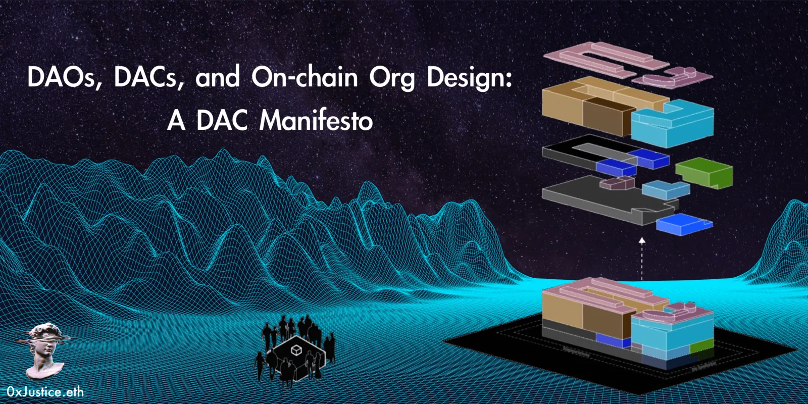
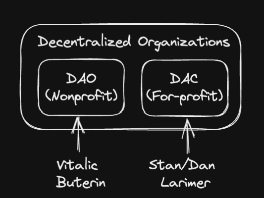

DAOs, DACs, and On-chain Org Design: A DAC Manifesto
Originally published at https://paragraph.com/@0xjustice/daos-dacs-and-on-chain-org-design-a-dac-manifesto

Public goods are excellent, but who funds them? Are all DAOs public goods? How can a DAO be autonomous if its continued existence rests on charitable grants from others? Is profitability "extractive" at best and a blatant violation of the hyperstructure thesis at worst? When faced with the rhetoric of the current Web3 ethos, these are the questions you must ask yourself.
In September 2013, Stan and Dan Larimer (father/son) published their vision for Decentralized Autonomous Companies (DACs) in Bitcoin and the Three Laws of Robotics and Overpaying for Security in the Let's Talk Bitcoin publication. In it, they describe the motivation and value of recreating traditional companies on a blockchain. Their work and views fell through the cracks and have yet to receive the attention they deserve, but more on this later.
In May 2014, Vitalik Buterin published his seminal paper DAOs, DACs, DAs and More: An Incomplete Terminology Guide describing his taxonomic breakdown of decentralized entities. He categorizes DAOs as nonprofit and DACs as for-profit on-chain organizations with the caveat that "this distinction is a murky one" and "more of a fluid one and hinges on emphasis." In either case, each personality seemed uniquely attracted to one of the two implementations. An illustration of both Larimer's and Vitaliks' taxonomy might look as follows.

I don’t want to be too sidetracked by terminology, but what's interesting is that the nonprofit version of decentralized organizations has completely overtaken the conversation and view of the movement. It's become a joke to compare DAOs to businesses. The DAO landscape recoils from any structure or practice that resembles traditional organizational structures, and seasoned founders see DAOs as an efficient way to waste money. While I won't discount the need for nonprofit crypto-native organizations, I believe there is a tremendous opportunity to flesh out the for-profit side of the story.
I want to make a renewed case for DACs. I'll do this by restating their value proposition and then argue that for-profit on-chain organizations vastly outnumber the need for nonprofit on-chain organizations. Lastly, I'll offer up a Manifesto for DAC thinkers and conclude with an invitation to join a broader movement called On-Chain Org Design (OOD) to help advance both classes of organizations.
The Value Proposition of DACs
Asking if DAOs are businesses is like asking if submarines swim. They "swim" faster and more powerfully than a human ever could. On-chain organizations do for traditional organizations what computers did for the stock market. They accelerate and supercharge them in entirely new ways.
They have an unbounded reach, are potentially faster, and are more customizable than their traditional counterparts. They're all this and ultimately not reliant on national authorities to be so. They possess these traits through the power of the following properties:
-
Programmable stakeholders
-
Programmable incentives
-
Programmable governance
-
Incorruptible business rules
Just as Ray Kurzweil has pointed out, as soon as a domain of knowledge moves within the scope of information science, it inherits the same property of exponentially accelerating returns. This perspective is a macro view of on-chain organizations. On-chain organizations are not about preconceived notions of hierarchy and governance but about the fact that you can build anything imaginable.
The original vision for DACs was that they would be more efficient than traditional organizations, enabling them to charge lower fees. Compare this with today's narrative, which often says they are less efficient by design. How can a less efficient organization charge less than its traditional counterpart?
A strong thread in the Larimer writings is the notion of incorruptibility. "Ultimately, to achieve complete incorruptibility, developers must be willing to let go of their own control. If there remains any centralized human control anywhere, it will eventually be exploited to the detriment of the DAC's stakeholders. DACs need to be free to be trusted."
He states this as a chief reason for creators relinquishing control. "Its creator can improve its survival odds by promoting it and defending it up to a point. But the umbilical cord should be quickly severed since its creator remains exposed to the risks of the real world." DACs are not second-rate DAOs. They're the original use case.
The Preponderance of DACs
Nine out of ten companies globally are for-profit endeavors. Nonprofits and public goods are great, but the world runs on ventures. For-profit is not inferior to nonprofit. Free trade among voluntary agents is a positive-sum game. Both parties benefit, or else they wouldn't trade.
In September 2022, Vitalik wrote a paper titled DAOs are not Corporations, yet despite what the title says, he came to a similar conclusion.
"Realistically, we probably only need a small number of DAOs that look more like constructs from political science than something out of corporate governance…."
In other words, most "DAOs" are best served by adopting traditional business dynamics. Vitalik says that "by far the greatest number of organizations, even in a crypto world, are going to be 'contractual' second-order organizations.."
Again, most on-chain organizations will be standard for-profit organizations, and a much smaller subset will be of the nonprofit political variety. So if this is the case, why is so little discussion and strategy had around it?
A DAC Manifesto
In the spirit of the Agile Manifesto, I submit the following DAC Manifesto. And similar to that Manifesto, I'll assert that while the things on the right are important, those on the left are more important.
-
Value before Community
-
Coordination Games over Governance
-
Self-sustainability over Grants
-
Renovation over Reinvention
-
Modules over Monoliths
Value before Community
Build something people want (worth protecting) before incentivizing its promotion and decentralizing. Raising money pre-product is an exception rather than a rule for startups. Someone will object, "How do you know you're building something people want?!" The same way founders did in the past. You build an MVP and then iterate its development, validating at every stage.
Startups may become communities, but they don't start that way. Projects spend more time and money cultivating community than finding product market fit (PMF). The number one mistake of startups is premature scaling, according to the Startup Genome Project. It may be premature decentralization for crypto-native projects. Attempting to decentralize before finding PMF is deadly.
Coordination Games over Governance
Every business is a game. We typically call those games business models. The critical feature made possible by crypto-native organizations is guaranteed execution and programmability; through these, we can execute advanced levels of coordination.
Governance is not a business model. Manual decision-making (governance) is unavoidable, but it's not the key feature of programmable organizations. We wouldn't entertain founders who hadn't thought through their business model. Why should it be different here?
Governance obsession has hijacked the conversation. It's time to recenter on coordination.
Self-sustainability over Grants
Nonprofits and cooperatives are only two of the seven predominant categories of ventures. They are not the typical drivers of new innovation. As many of the DAO Twitterati would suggest, the casual pooling of funds is not "bigger" than for-profit business as an industry.
The reader may be surprised to hear that collectivism is one of many recognized methods of addressing the tragedy of the commons. Privatization is another. Speaking of Garrett Hardin's essay on "The Tragedy of the Commons," Case Western Reserve University School Law professor Jonathan H. Adler says:
"What many forget is Hardin actually offered two prescriptions for preventing the tragedy of the commons. 'Mutual coercion, mutually agreed upon' was one approach, but Hardin had another. In the alternative, Hardin suggested that greater reliance on property rights was a proven way to prevent the tragedy of the commons. As he explained, the tragedy of the commons 'is averted by private property or something formally like it.' Indeed, Hardin suggested this was one of the primary functions of property in land." - Property Rights and the Tragedy of the Commons
Declaring a project a public good is not a replacement for a business model. Charitable donations can't be the business model for every Web3 organization, and founders don't help themselves by presumptively categorizing their ventures as such. DAC design begins with sustainability.
Renovation over Reinvention
On-chain organizations are certainly an innovation and represent a discontinuity with the past, but we lose too much if we abandon all sense of historical continuity. Web3 is an evolution and advancement of Web2, not a repudiation or rejection of it. We should replicate what has worked and then improve it. We reject the reactionary opposition to anything that looks like traditional organizational structures.
Businesses are not, by definition, exploitative or mindless top-down meat grinders. Many early visions of business were purpose-driven and lean, and leaders like Edwards Deming championed bottom-up decision-making for decades. All good companies have positive externalities. Lean practitioners have championed this forever.
"Great companies are not in business to make money; they make money to stay in business and accomplish an important purpose." - Mary and Tom Poppendieck.
We can frame crypto-native organizations as a natural evolution of the Everything as Code and API-first movement. The idea is that just as code has consumed the development process and infrastructure, it has now engulfed the organization.
Rather than building as reactions to imagined poorly run organizations, DACs develop and advance on the learnings of well-run organizations. See Efficient DAO Design for how we can do this.
Modules over Monoliths
There's no one right way to build an organization. What's right at one size is wrong at another. We must judge any configuration relative to a desired goal. By framing on-chain organizations as combinations of organizational capabilities or modules, we adopt a vocabulary that is neither exclusionary nor dogmatic.
This last value of the Manifesto encourages flexibility and less judgment over what is a real or fake "DAO/DAC." It encourages neutrality over what should or shouldn't be built and represents a builder-over-bureaucracy viewpoint. Like software, we can theorize patterns and antipatterns. It's all about tradeoffs. This is the way to move forward.
Conclusion
My purpose is not to alienate current DAO practitioners or thought leaders. Quit the contrary; I want us to create a new, more practical, and sustainable Schelling point that has applicability to a greater variety of organizations.
We all know the public goods narrative, but someone pays for those public goods. When markets shift and grants dry up, there should be a strong backbone of revenue-generating companies; else, the whole system has no hope of gaining greater adoption.
The Web3 movement has promoted the narrative of providing for the unbanked, but we may have overlooked the need to equip the industrious. DACs, address these things by rearticulating the value prop of building on-chain in a way that speaks to founders and traditional organizations.
If this resonates with you, the Polygon DoD team invites you to join us in advancing this new vision of On-chain Org Design (OOD). We want to partner with you to cultivate this scene.
This Manifesto, combined with Protocol-first DAO Strategy & Games over Governance, comprises a siren call to builders eager to press into the next generation of digital organizations. We'll do this through articles, hands-on education, and a series of Playbooks designed to equip founders to build the next generation of internet-native organizations.
Join us. Let's create a movement: https://forms.gle/mSeqG9tXP2FBk2TdA
Special thanks to Itamar for inspiring this document's explicitly agile manifesto structure and providing invaluable editorial feedback. Special thanks to my teammates, Grendel and Tommy, who are creating the Polygon Village 2.0 program to equip early-stage projects to avoid many of the pitfalls in this post. We will build bigger and better. Powered by Polygon.
Originally published on 0xJustice.eth